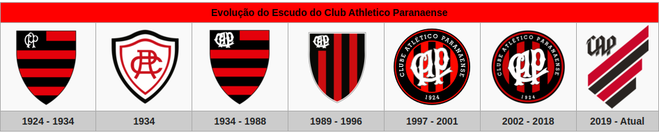

O Athletico Paranaense, mais conhecido como Athletico Paranaense, cujo acrônimo é CAP, é um clube de futebol do Brasil, da cidade de Curitiba, capital do estado do Paraná. Foi fundado em 26 de março de 1924, a partir da fusão do International Foot-Ball Club e do América Futebol Clube.
Suas cores tradicionais são o vermelho e o preto, que lhe rendem a alcunha de rubro-negro. Manda seus jogos no Estádio Joaquim Américo Guimarães, mais conhecido como Arena da Baixada, que reinaugurado em duas fases: em 1999, após ser totalmente reconstruído; em 2014, após as reformas exigidas pela FIFA para receber os jogos da Copa do Mundo FIFA de 2014.
Em 1912, Joaquim Américo Guimarães reuniu um grupo de amigos e fundou o International Foot-Ball Club, que tinhas as cores preta e branca no seu uniforme e disputava torneios na baixada da Água Verde.
Nos torneios internos organizados pelo Internacional, entravam em campo times secundários, formados por sócios do clube, um desses grupos decidiu dar o grito de independência e, no dia 24 de maio de 1914, fundou o América Futebol Clube que utilizava as cores vermelha e branca, seu primeiro presidente foi o capitão Augusto do Rego Barros. América e Internacional passaram então a disputar partidas amistosas e logo se tornaram adversários também na disputa do campeonato estadual. O Internacional venceu o primeiro, em 1915. O América levantou o troféu em 1917.
A primeira partida de futebol (amistosa) que a nova agremiação realizou foi no dia 6 de abril de 1924, contra o Universal FC. e obteve vitória por 4 a 2. O time jogou com Tapyr, Marrecão e Ferrário; Franico, Lourival e Malello; Smythe, Ari, Marreco, Maneco e Motta. Para essa partida não foi possível utilizar o novo uniforme, que ficaria pronto apenas 15 dias subsequentes, confeccionadas para serem utilizadas no Torneio Início de 1924, sendo assim o clube precisou jogar o amistoso com o antigo uniforme do Internacional, escolhido na ocasião devido a sua prevalência na fusão. Atlético Paixão de um Povo. [S.l.: s.n.] 1994 Os gols foram marcados por Marreco, Ari (2) e Malello. O árbitro foi José Falcine, atleta do Savoia, que mais tarde jogou no rubro-negro.
